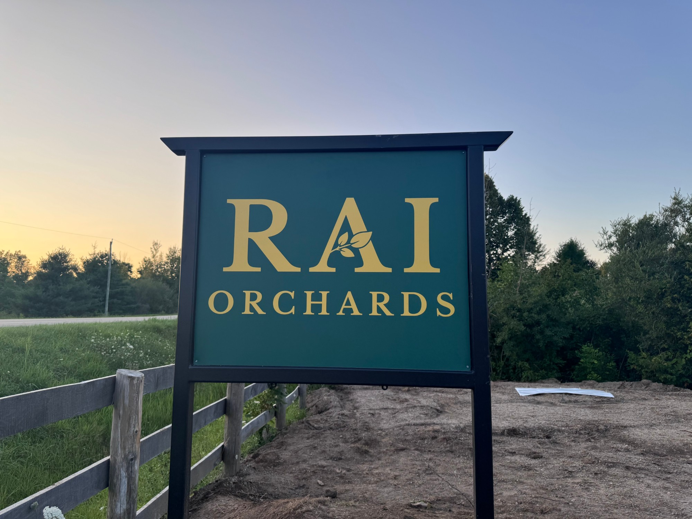

{{ copy.story.eyebrow | escape }}
{{ copy.story.headline | escape }}
{{ copy.story.lede | escape }}

{{ copy.story.paragraph_1 | escape }}
{{ copy.story.paragraph_2 | escape }}
{{ copy.story.paragraph_3 | escape }}
{{ copy.story.vision_eyebrow | escape }}
{{ copy.story.vision_heading | escape }}
{{ copy.story.vision_paragraph | escape }}
{{ stat.value | escape }}
{{ stat.label | escape }}
{{ copy.story.cta_heading | escape }}
{{ copy.story.cta_note | escape }}
{{ copy.story.cta_button | escape }}Land acknowledgement
Rai Orchards is located in Puslinch, on the traditional territory of the Hatiwendaronk and within the Treaty Lands and Territory of the Mississaugas of the Credit First Nation. We recognize the Mississaugas of the Credit as the Anishinaabe treaty holders of the Between the Lakes Treaty No. 3, first negotiated in 1784 and confirmed in 1792. We also recognize the enduring relationships of the Haudenosaunee, including Six Nations of the Grand River, with this territory.
As settlers who live, care for, and grow food on these lands, we are committed to respecting Indigenous sovereignty and self-determination. We have a responsibility to continually learn the histories and living treaty relationships of this territory, uphold Indigenous treaty rights, and care for the land and water with humility.
We believe that acknowledgement should be accompanied by material action. As our orchard grows, we will look for concrete ways to practice reciprocity and redistribution, and we will share those commitments openly when we undertake them. We understand these actions not as charity or as a way of discharging our responsibilities, but as part of an ongoing effort to reckon with the fact that our ability to occupy, cultivate, harvest from, and earn income from this land exists within an ongoing system of settler colonialism.
Treaty relationships are living relationships, and we understand ourselves as settlers with ongoing responsibilities within them. We are committed to listening to Indigenous-led calls for justice and Land Back and to allowing what we learn to shape how we relate to this land over time.
We offer our gratitude to the generations of Indigenous peoples who have cared for these lands since time immemorial, and to those who continue to exercise stewardship, sovereignty, and responsibility toward them today.
“Gratitude comes first, but gratitude alone is not enough.”